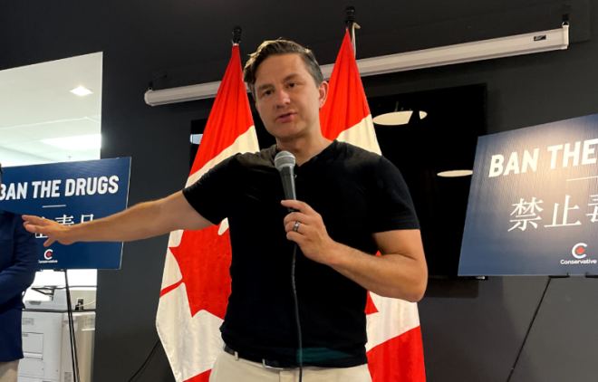
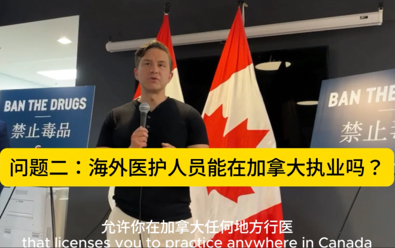

联邦保守党党领博励治（Pierre Poilievre）于3日到访万锦社区，不少华裔居民来参加并现场提问。

博励治与万锦康山（Markham-Thornhill）选区保守党候选人Lionel Loganathan于上周六来到万锦，与华裔居民见面。
博励治在会上解说了保守党的常识性计划，包括砍掉碳税、降低个人所得税，禁止毒品、关闭“安全注射场所”，让有重复犯罪或暴力犯罪史的人不能获得保释等内容。
在现场提问环节，华裔居民就房价、海外医护人员资格认证以及儿童性别教育等话题，向博励治提问。
博励治表示，如今房价比之前高涨，对于有好几套数百万或千万价值的投资者来说是获利的，但对于只是拥有自住房的普通人来说，其实并不意味着变得更富有了。
对于住房难负担的问题，博励治认为，政府能做的是通过加快建房，改善供需来实现。他指出，但如今人口增长比住房库存增长速度要快得多，如果能改善这两者之间的比例关系，房价将会变得适中。当人们收入能力提高时，年轻人将能买得起房。

对于一位华人心脏病学医师提出的希望在加拿大继续执业、来帮助改善这里医护人员短缺的问题，博励治表示，保守党提出的Blue Seal项目，将帮助海外医护人员通过考试来获得执业资格认证，从而让他们在这里就业。
他指出，很多人说，在多伦多如果突发心脏病，不需要打911，直接叫出租车就行，因为遇到的出租车司机很可能曾经是医生。“因此我们希望这位当出租车司机的医生能够去参加考试，获得资格认证。”
另外，现场有民众提出了对于儿童性别认知与教育问题的担忧。博励治在表达自己的立场与观点时说，“所有成年人都可以做他们选择做的任何事情，但不应该推动激进的性别意识形态到我们的孩子身上。”
在说道，“保守派不支持激进的性别意识形态，我们反对青春期阻滞剂、不可逆疗法或者改变孩子性别的手术。没有生理上的男性可以进女子浴室和女子监狱、妇女庇护所或竞技体育。父母应该是我们孩子认知性别和做决定时的最终权威”时 ，现场观众多次鼓掌表示赞同。